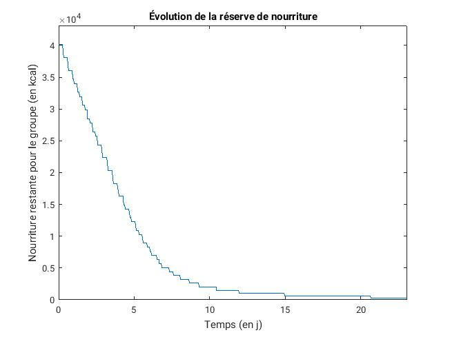

Sommaire
Résultats
Discussion et Perspectives Bibliographie Remerciements
Résultats
Discussion et Perspectives Bibliographie RemerciementsComme nous l'avons vu dans la partie Le jeu, la complexité de l'algorithme de calcul de l'équilibre du jeu (en connaissant les fonctions d'utilité) est en:
Pour imaginer faire tourner la simulation pour plusieurs joueurs, il est donc nécessaire de réfléchir à l'optimisation du caclul des fonctions d'utilité, du nombre de stratégies et du calcul l'évolution de la fitness de chaque joueur. En effet, pour simuler le comportement d'un seul joueur, nous avions utilisé un pas de discrétisation pour les stratégies possibles d'un centième de portion quotidienne. Et les stratégies possibles allaient avec ce pas de 0kcal à la quantité de nourriture restante au total. Etant donné que jamais un joueur ne choisit de consommer bien plus d'un tiers de portion journalière à la fois (à cause de nos fonctions d'utilité), nous avons choisi finalement de ne laisser dans les stratégies possibles que les quantités allant de 0kcal à une demie portion quotidienne.
En outre, le modèle que nous avons utilisé pour calculer la fitness de chaque joueur (cf Le jeu) fait intervenir une résolution d'équation différentielle. Celle-ci était à l'origine faite par une méthode d'Euler explicite. Nous avons choisi de finalement résoudre l'équation par un schéma d'Euler implicite, qui est inconditionnellement stable, et nous permet donc de réduire le pas de temps utilisé pour les calculs. Nous avons ainsi multiplier par dix ce pas de temps, le passant ainsi à un dixième d'heure.
Nous avons en outre réfléchi au pas de temps global de la simulation (qui est d'une heure), mais nous avons conclut que nous ne pouvions pas réellement l'augmenter, puisque les joueurs vont choisir de manger plusieurs fois par jour, donc faire un pas de temps de plusieurs heures fausserait certainement la simulation (les joueurs ne pourraient plus vraiment manger quand "le modèle le voudrait", mais devrait "attendre le prochain pas de temps"). Il est possible cependant de réduire la durée totale de la simulation (actuellement de 100 jours, soit 2400 heures), mais on ne verrait alors plus les joueurs mourir, car un homme sans aucune réserve de nourriture ne meurt déjà qu'au bout de 70 à 80 jours.
Tout cela ne nous a malheureusement pas permis de faire tourner la simulation pour 26 joueurs, car pour une telle simulation, nous effectuons 2400 pas de temps, pour chacun desquels nous calculons l'utilité de chacun des 26 joueurs sur chacune des 50 puissance 26 combinaisons de stratégies possibles. Et pour la stratégie choisie, nous effectuons alors pour chaque joueur les 10 pas de temps nécessaires à la résolution de l'équation différentielle permettant de simuler son évolution. La complexité du programme est bien trop importante, et la mémoire disponible insuffisante (la matrice de 26 lignes et 50 puissance 26 colonnes donnant toutes les combinaisons de stratégies possibles dépasse l'espace de stockage autorisé). Cependant, nous avons tout de même fait touner la simulation pour plusieurs joueurs, et vous trouverez ci-dessous les résultats pour des simulations avec un et trois joueurs.
Simulation à un joueur:
L'allure globale de la consommation d'un seul joueur au cours du temps est représentée ci-dessous, avec l'évolution de sa réserve de nourriture.
On remarque que la consommation de nourriture n'est pas continue (le joueur ne mange pas à chaque heure). Elle est au début d'un tiers de portion quotidienne, puis lorsque les vivres viennent à manquer, les repas deviennet moins conséquent et plus espacés. Cependant, il finissent lorsqu'il reste vraiment peu de nourriture par devenir vraiment trop faibles et espacés (un dixième de portion quotidienne consommée après une quarantaine de jours sans manger). Ceci paraît peu réaliste, mais ceci dit, la réserve de nourriture est vraiment quasi vide à ce moment. L'évolution de cette réserve permet de remarquer une décroissance linéaire en début de simulation (puisque les premiers jours, les repas sont réguliers et de quantité assez constante), puis la décroissance diminue lorsque la nourriture vient à manquer. Si l'on étudie la consommation du joueur en début de simulation, on remarque qu'il mange bien un tiers de portion quotidienne par jour (ce qui est logique, puisqu'il reste encore suffisamment de nourriture):

Si cette consommation semble presque trop parfaitement constante, c'est dû à notre diminution du nombre de stratégies possibles. Lorsque l'on augmente le nombre de stratégies, on remarque de très légères variations.
Comme nous l'avons vu dans la partie Le jeu, la fitness d'un joueur a bien en début de simulation l'allure attendue par le modèle mathématiques. Si l'on regarde plus globalement son évolution, on s'attend à ce qu'elle reste stable dans les premiers jours, lorsque le joueur mange bien une portion quotidienne par jour, puis elle devrait diminuer. Elle diminuerait de manière exponentielle s'il ne se nourrissait plus du tout, donc avec les repas de moins en moins conséquents et de plus en plus espacés, on devrait observer une décrooissance de plus en plus proche d'une décroissance exponentielle, avec quelques "sursauts" correspondant aux repas pris. Les résultats de la simulation ci-dessous confirment bien nos attentes:
Le seuil représenté par la droite horizontale est celui à partir duquel on considère que le joueur est mort de faim.
Simulation à trois joueurs:
La simulation a trois joueurs donne des résultats très semblables à la simulation à un joueur. Simplement, on observe la variabilité des individus, représentée par des tirages aléatoires du temps de survie à jeun et de leur portion de nourriture quotidienne nécessaire (celle-ci, pour garder les valeurs moyennes connues de 1800kcal pour les femmes et 2100 pour les femmes ont en effet été tirées au sort dans une loi normale d'écart-type 25 et de moyenne 1800 dans 50% des cas et 2100 dans 50% des cas). en effet, différents joueurs ne mangent pas tout à fait la même quantité, ni tout à fait aussi fréquemment.

On peut aussi tester des simulations avec d'autres paramètres du modèle, par exemple, avec un joueur commençant la partie déjà mourant de faim (c'est-à-dire avec une fitness de départ de 0.5), on remarque alors un comportement assez illogique: celui-ci se nourrit de manière continue, jusqu'à regagner une bonne santé. L'effet de satiété que nous avions réussi à simuler n'est donc pas établi dans toutes les situations.
Enfin, nous avons effectué des simulations pour différentes quantité de départ, et comme attendu, ceci n'a d'influence que sur le plateau dans les premiers jours de la simulation. Ci-dessous sont représentés les résultats pour une réserve de vivres deux fois plus élevées que la précédente: